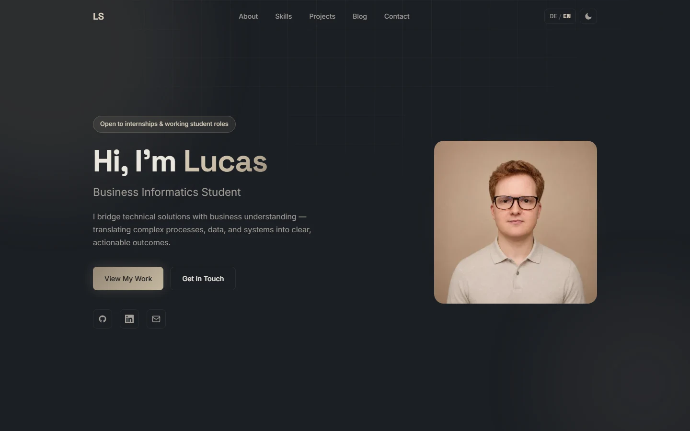

Overview
This website is where recruiters and anyone else curious can see who I am, what I have built and what I think about. It started in 2025 as a simple static page and has grown into a bilingual portfolio with project case studies and a blog.
I deliberately built it without a framework or build step: plain HTML, CSS and JavaScript, hosted on GitHub Pages. Writing every line myself forces me to understand what frameworks usually hide — and it keeps the site fast, cheap to host and easy to reason about.
Architecture
- Static pages: one homepage, one page per case study and blog post, a custom 404 page. No database, no server-side code.
- No flash on load: a tiny synchronous
init.jsin the<head>sets the colour theme and language before the first paint. - English-first i18n: English is written directly in the markup, so search engines and link previews see it. German UI strings live in a dictionary in
lang.js; long-form text such as this page uses paired language blocks. The choice is remembered inlocalStorage. - Privacy by default: self-hosted fonts, no analytics, no cookies, no third-party requests.
A Senior-Level Review
In September 2026 I asked for a review of the whole site from the perspective of an experienced web developer. It ran as three parallel passes — security and privacy; performance, SEO and accessibility; code quality and architecture — and produced a prioritised list of findings. I grouped them into phases and implemented the ones with the best value for a portfolio.
Just as important were the things I decided not to do. Migrating to a static site generator such as Eleventy would remove duplicated markup, but it adds a build pipeline that a six-page site does not need yet. Some structured data and hardening measures were simply overkill for the purpose of the site.
Security
- Strict Content Security Policy: I moved every inline script and style into files, which made it possible to set
script-src 'self'on every page. A CSP shapes architecture — it only works if the code is organised for it. - Referrer policy via meta tag, so outgoing links only reveal the origin.
- Defensive storage access:
localStoragecan throw in some privacy modes, so every read and write is guarded and the site falls back to its defaults.
Accessibility & Performance
- Contrast: I recalculated the colour tokens against WCAG AA. The primary button in light mode had a contrast ratio of only 2.9:1; all text now reaches at least 4.5:1 in both themes.
- Keyboard and screen readers: a skip link, a visible focus ring, a mobile menu that announces its state with
aria-expandedand closes with Escape, and specific labels for icon links. - Reduced motion: animations switch off when the operating system asks for it.
- Images: the hero portrait went from 165 KB to 7–34 KB as responsive WebP, and the link preview image from 252 KB to about 60 KB.
Custom Domain
Through the GitHub Student Developer Pack I got the domain lucasstrubel.me for a year. GitHub Pages keeps hosting the site; only DNS changes:
- four A records pointing the apex domain to GitHub Pages,
- a CNAME record pointing
wwwtolucasstrubel.github.io, - a TXT record that verifies the domain in my GitHub account and protects it against takeover,
- and a
CNAMEfile in the repository.
HTTPS comes for free: GitHub Pages issues a Let's Encrypt certificate automatically, so the
separate SSL certificate from the student pack was not needed. The one stumbling block was
my www record, which first pointed to the apex domain instead of GitHub — and
DNS changes mostly mean waiting for them to propagate.
Results
Lighthouse (local measurement): Performance 98–99, Accessibility 100, Best Practices 100 and SEO 100 across the homepage, case studies and blog posts — with zero console errors and no Content Security Policy violations on any page.
What I Learned
- Security is an architecture decision. A strict CSP was only possible after restructuring where code lives.
- First impressions happen before the click. Making English the source language changed what LinkedIn and search engines show — the preview is the first thing a recruiter sees.
- Prioritising is part of the job. A good review produces more findings than are worth fixing; choosing what fits the purpose mattered more than completeness.
- DNS rewards patience. Most of the domain setup was waiting and verifying, not configuring.
Built with Claude Code
As with Faktura, I am open about how this was built: the review and most of the implementation ran with Claude Code. The decisions — what to fix, what to skip, how the site should present me — and the checking of every change were mine.
Überblick
Auf dieser Website können sich Recruiter und alle anderen Interessierten ein Bild davon machen, wer ich bin, was ich gebaut habe und worüber ich nachdenke. Sie begann 2025 als einfache statische Seite und ist inzwischen ein zweisprachiges Portfolio mit Fallstudien und Blog.
Ich habe sie bewusst ohne Framework und ohne Build-Step gebaut: reines HTML, CSS und JavaScript, gehostet über GitHub Pages. Jede Zeile selbst zu schreiben zwingt mich, zu verstehen, was Frameworks sonst verbergen — und hält die Seite schnell, kostenlos im Hosting und leicht nachvollziehbar.
Architektur
- Statische Seiten: eine Startseite, je eine Seite pro Fallstudie und Blogbeitrag, eine eigene 404-Seite. Keine Datenbank, kein serverseitiger Code.
- Kein Flackern beim Laden: ein kleines, synchron geladenes
init.jsim<head>setzt Farbschema und Sprache vor dem ersten Rendern. - Englisch als Quellsprache: Englisch steht direkt im HTML, damit Suchmaschinen und Link-Vorschauen es sehen. Die deutschen Texte liegen in einem Wörterbuch in
lang.js; lange Texte wie diese Seite nutzen gepaarte Sprachblöcke. Die Auswahl wird inlocalStoragegespeichert. - Datenschutz als Standard: selbst gehostete Schriften, kein Tracking, keine Cookies, keine Anfragen an Drittanbieter.
Ein Review auf Senior-Niveau
Im September 2026 habe ich die gesamte Seite aus Sicht eines erfahrenen Webentwicklers prüfen lassen. Das Review lief in drei parallelen Durchgängen — Sicherheit und Datenschutz; Performance, SEO und Barrierefreiheit; Codequalität und Architektur — und ergab eine priorisierte Liste von Befunden. Diese habe ich in Phasen gegliedert und die umgesetzt, die für ein Portfolio den größten Nutzen haben.
Genauso wichtig war, was ich bewusst nicht umgesetzt habe. Eine Migration auf einen Static-Site-Generator wie Eleventy würde doppeltes Markup beseitigen, bringt aber eine Build-Pipeline mit, die eine Seite mit sechs Unterseiten noch nicht braucht. Manche strukturierten Daten und Härtungsmaßnahmen waren für den Zweck der Seite schlicht überdimensioniert.
Sicherheit
- Strikte Content Security Policy: Ich habe alle Inline-Skripte und -Styles in Dateien ausgelagert. Erst dadurch ließ sich auf jeder Seite
script-src 'self'setzen. Eine CSP prägt die Architektur — sie funktioniert nur, wenn der Code dafür organisiert ist. - Referrer-Policy per Meta-Tag, damit ausgehende Links nur die Domain preisgeben.
- Abgesicherter Speicherzugriff:
localStoragekann in manchen Privatsphäre-Modi Fehler werfen. Jeder Zugriff ist daher abgesichert, und die Seite fällt auf ihre Standardwerte zurück.
Barrierefreiheit & Performance
- Kontrast: Ich habe die Farbwerte gegen WCAG AA nachgerechnet. Der Primär-Button im hellen Modus kam nur auf ein Kontrastverhältnis von 2,9:1; inzwischen erreicht jeder Text in beiden Farbschemata mindestens 4,5:1.
- Tastatur und Screenreader: ein Link „Zum Inhalt springen“, ein sichtbarer Fokusrahmen, ein mobiles Menü, das seinen Zustand mit
aria-expandedmeldet und sich mit Escape schließt, sowie eindeutige Beschriftungen für Icon-Links. - Reduzierte Bewegung: Animationen schalten sich ab, wenn das Betriebssystem das verlangt.
- Bilder: Das Porträt auf der Startseite schrumpfte als responsives WebP von 165 KB auf 7–34 KB, das Vorschaubild für Link-Vorschauen von 252 KB auf rund 60 KB.
Eigene Domain
Über das GitHub Student Developer Pack habe ich die Domain lucasstrubel.me für ein Jahr erhalten. Das Hosting bleibt bei GitHub Pages; geändert wird nur das DNS:
- vier A-Records, die die Hauptdomain auf GitHub Pages zeigen lassen,
- ein CNAME-Record, der
wwwauflucasstrubel.github.ioverweist, - ein TXT-Record, der die Domain in meinem GitHub-Konto verifiziert und vor Übernahme schützt,
- und eine
CNAME-Datei im Repository.
HTTPS gibt es kostenlos dazu: GitHub Pages stellt automatisch ein Let's-Encrypt-Zertifikat
aus, das separate SSL-Zertifikat aus dem Student Pack war daher nicht nötig. Der einzige
Stolperstein war mein www-Eintrag, der zunächst auf die Hauptdomain statt auf
GitHub zeigte — und DNS-Änderungen bedeuten vor allem: warten, bis sie sich verbreitet haben.
Ergebnisse
Lighthouse (lokal gemessen): Performance 98–99, Barrierefreiheit 100, Best Practices 100 und SEO 100 auf Startseite, Fallstudien und Blogbeiträgen — ohne Konsolenfehler und ohne Verstöße gegen die Content Security Policy auf irgendeiner Seite.
Was ich gelernt habe
- Sicherheit ist eine Architekturentscheidung. Eine strikte CSP wurde erst möglich, nachdem ich umstrukturiert hatte, wo Code liegt.
- Der erste Eindruck entsteht vor dem Klick. Englisch als Quellsprache hat verändert, was LinkedIn und Suchmaschinen anzeigen — die Vorschau ist das Erste, was ein Recruiter sieht.
- Priorisieren gehört dazu. Ein gutes Review liefert mehr Befunde, als sich zu beheben lohnt; entscheidend war, auszuwählen, was zum Zweck passt.
- DNS belohnt Geduld. Der Großteil der Domain-Einrichtung war Warten und Prüfen, nicht Konfigurieren.
Mit Claude Code entwickelt
Wie bei Faktura lege ich offen, wie die Seite entstanden ist: Das Review und der Großteil der Umsetzung liefen mit Claude Code. Die Entscheidungen — was behoben wird, was nicht, wie die Seite mich präsentieren soll — und die Prüfung jeder Änderung lagen bei mir.